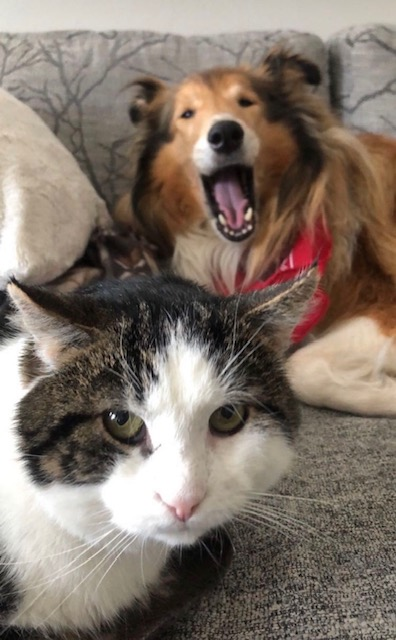

Manu



Tutustu Manuun
Manuel on Porvoon löytöeläinkodista pelastettu noin 8-10 vuotias seniorikissa. Manu oli aluksi todella ujo, mutta haki turvaa ihmisistä. Manun ensimmäinen ystävä oli Collie nimeltä Tara. Manu kiintyi Taraan nopeasti, vaikka aluksi Tara oli pelottava kummajainen ujolle Manulle.
Myöhemmin perheeseen tuli pieni rescuekissa Mimosa. Kesti useita päiviä, ennenkuin Manuel lämpeni Mimosalle. Lopulta kun Manuel hyväksyi Mimosan perheeseen, heistä tuli erottamattomat. Mimosa haki turvaa Manuelista, sillä hän oli menettänyt emonsa aivan liian pienenä.